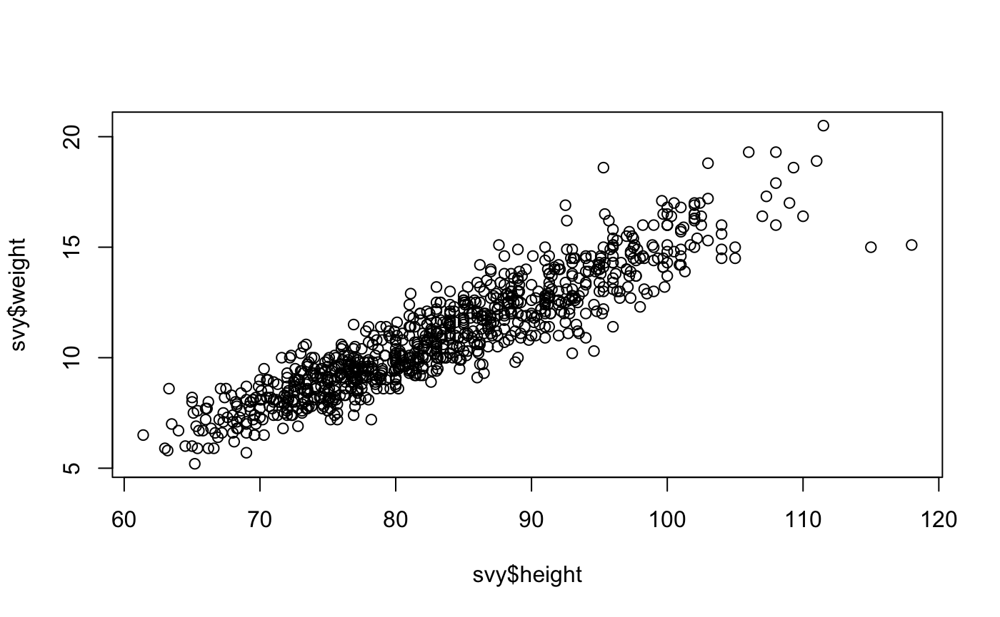
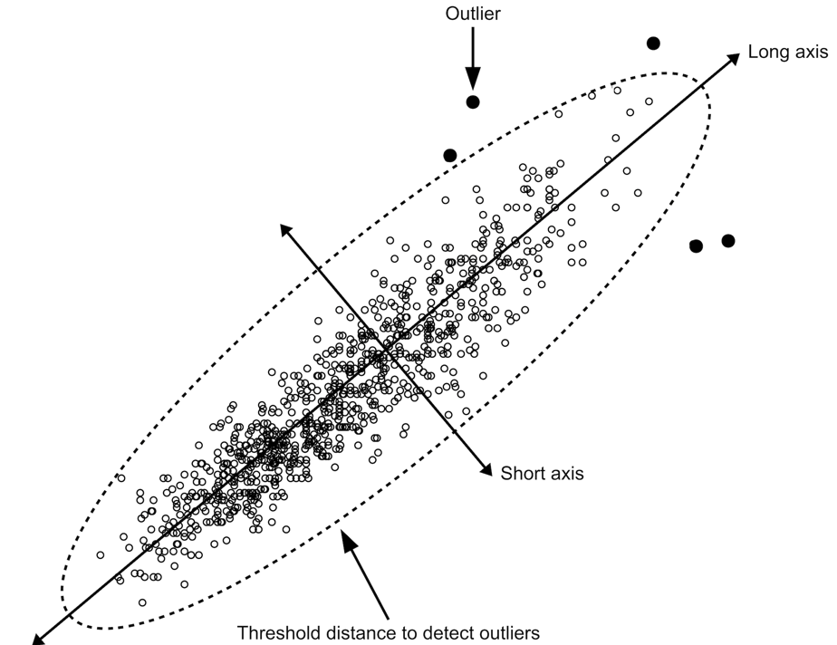
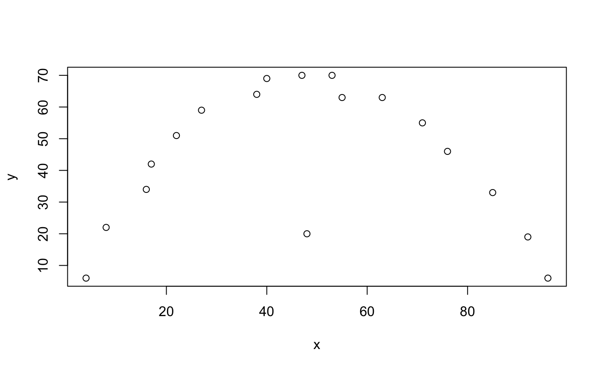
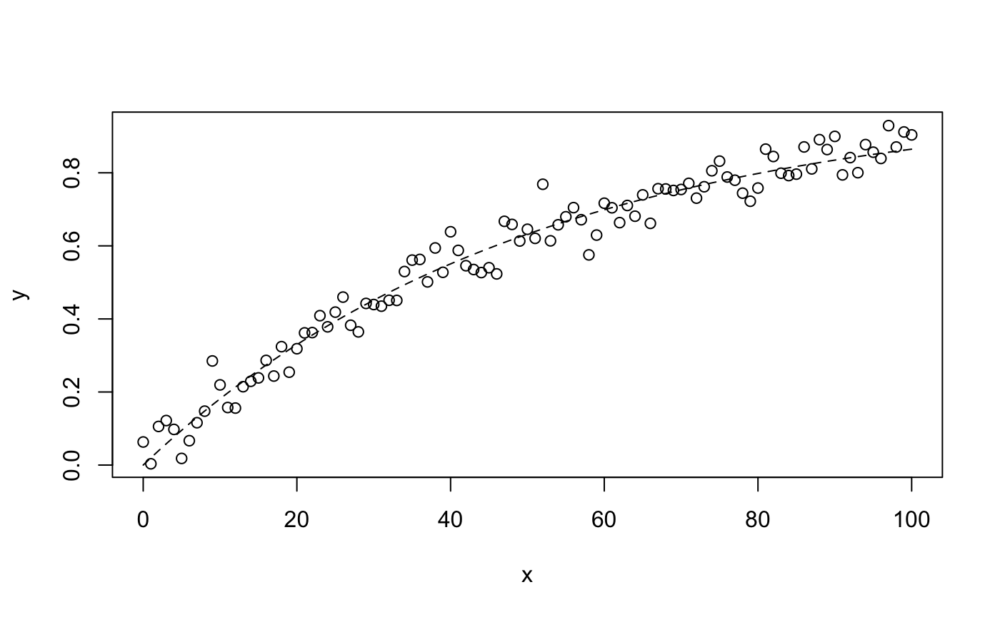
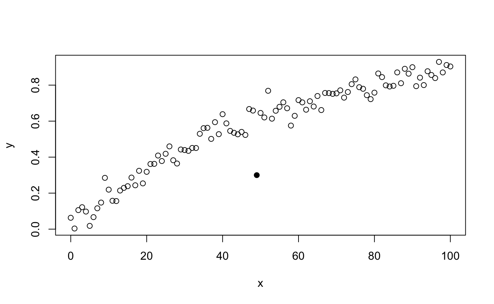
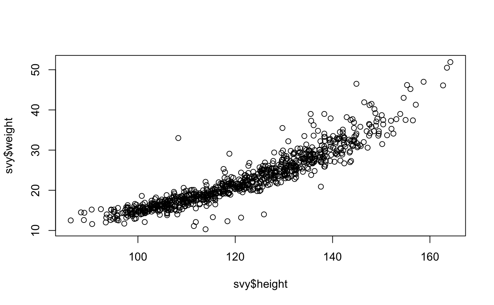
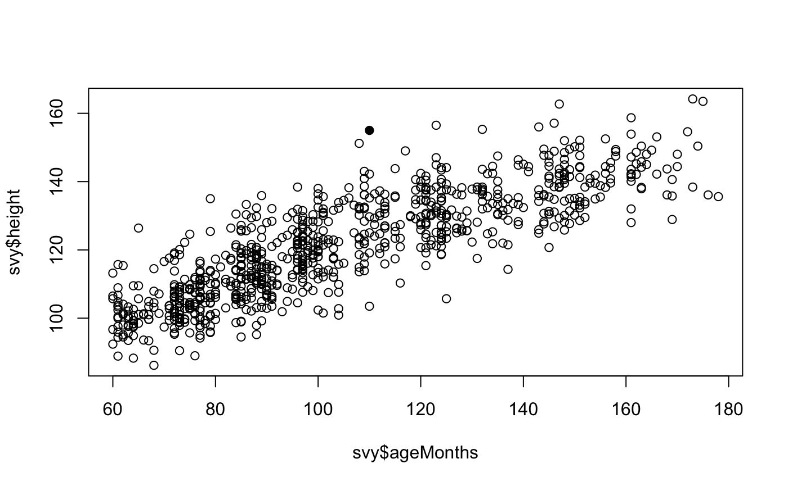
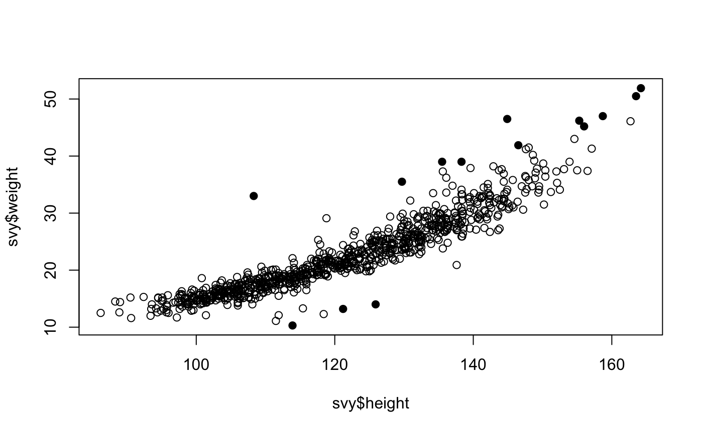

We can expect anthropometric variables in children to be strongly and positively associated with each other. This is because children tend to gain both weight and height as they grow. This allows us to use graphical and numeric methods to identify outliers (i.e. observations that are distant from most other observations) that may be due to errors.
It is important to note that anthropometric surveys often use a method of comparing observed values against reference values using a process known as “flagging” to identify and censor outliers. The methods outlined in this section are intended to complement rather than replace the “flagging”
Identifying outliers by observation
We will use the dataset sp.ex01:
svy <- sp.ex01 head(svy) #> age sex weight height muac oedema #> 1 54 1 20.5 111.5 180 2 #> 2 53 1 19.3 108.0 167 2 #> 3 51 2 19.3 106.0 163 2 #> 4 44 1 18.9 111.0 163 2 #> 5 47 1 18.8 103.0 173 2 #> 6 48 2 18.6 95.3 171 1
The dataset sp.ex01 contains anthropometric data from a SMART survey from the Democratic Republic of Congo.
We will look at the relationship between height and weight in this dataset:
plot(svy$height, svy$weight)
The resulting plot is shown below.

There is a clear positive linear relationship between height and weight (i.e. weight increases with increasing height along a straight line). We can assess the strength of this relationship using the Pearson correlation coefficient:
cor(svy$height, svy$weight, method = "pearson", use = "complete.obs")
which returns:
#> [1] 0.9204116This is very close to one, which indicates a perfect positive association. There are, however a few points that lie outside of the bulk of the plotted points. These outliers may be due to errors in the data.
The presence of oedema can be associated with increased weight. This is a particular issue with severe oedema. An outlier with a high value of weight for a given height could be due to oedema. We can check this:
The pch = ifelse(svy$oedema == 1, 19, 1) tells the plot() function to plot filled circles for oedema cases and open circles for children without oedema. The resulting plot is shown below.
A single high weight for height outlier appears to be due to the presence of oedema.
The other filled circles that are located in the main mass of plotted points show that children with oedema may have a body weight within the normal range for their height. These children may not be not wasted but they are suffering from a form of severe acute malnutrition (SAM) known as kwashiorkor.
Outliers can be identified by eye. The identify() function can help with this:
Clicking on any point will cause the record (row) number associated with each point to be displayed on the plot (as shown below).
Right-clicking on the plot or pressing the “escape” key will stop identify().
The behaviour of the identify() function may be different when you use an alternative user interface for R such as RStudio or RAnalyticFlow.
The identify() function will, by default, display record (row) numbers for identified points. This is usually what is needed. Alternative labels can be displayed. For example:
plot(svy$height, svy$weight, pch = ifelse(svy$oedema == 1, 19, 1)) identify(svy$height, svy$weight, labels = paste(svy$height, svy$weight, sep = ";"), cex = 0.75)
displays the height and weight values at selected points.
The ability to display custom labels is useful if there is a variable (column) in a dataset that contains unique record identifiers.
It is useful to be able to store the record (row) numbers of identified points:
plot(svy$height, svy$weight, pch = ifelse(svy$oedema == 1, 19, 1)) stored <- identify(svy$height, svy$weight)
If the same points shown in the previous figure are clicked to identify them then:
storedwill return:
#> [1] "1" "6" "16" "62" "66"We can examine the data for the identified points:
svy[stored, ]
This returns:
#> age sex weight height muac oedema
#> 1 54 1 20.5 111.5 180 2
#> 6 48 2 18.6 95.3 171 1
#> 16 30 1 16.9 92.5 188 2
#> 62 55 1 15.1 118.0 156 2
#> 66 56 1 15.0 115.0 148 2The oedema data is coded 1 for present and 2 for absent.
Data can be checked and edited if needed. Note that record 6 is an oedema case and should probably be left alone.
If your dataset has many variables (columns) then you may specify only the variables (columns) of interest:
svy[stored, c("weight", "height", "oedema")]
This returns:
#> weight height oedema
#> 1 20.5 111.5 2
#> 6 18.6 95.3 1
#> 16 16.9 92.5 2
#> 62 15.1 118.0 2
#> 66 15.0 115.0 2Identifying outliers using statistical distance
A more formal method of identifying outliers is to use a measure of the statistical distance. A common measure of statistical distance that is applied to scatterplot data is the Mahalanobis distance. This treats the bivariate probability distribution as an ellipsoid. The Mahalanobis distance is the distance of a point from the centre of mass of the distribution divided by width of the ellipsoid in the direction of the point:

In directions in which the ellipsoid has a short axis the test point must be close to the centre of mass of the distribution. In directions in which the ellipsoid has a long axis the test point may be more distant from the centre of mass of the distribution.
The NiPN data quality toolkit provides an R language function outliersMD() that uses the Mahalanobis distance to identify outliers in the same dataset:
svy[outliersMD(svy$height, svy$weight), ]
This returns the same set of records that was identified by eye:
#> age sex weight height muac oedema
#> 1 54 1 20.5 111.5 180 2
#> 6 48 2 18.6 95.3 171 1
#> 16 30 1 16.9 92.5 188 2
#> 62 55 1 15.1 118.0 156 2
#> 66 56 1 15.0 115.0 148 2Data can be checked and edited if needed. Note that record 6 is an oedema case and should probably be left alone.
We can use the outliersMD() to identify and display outliers on a scatterplot:
plot(svy$height, svy$weight, pch = ifelse(outliersMD(svy$height, svy$weight), 19, 1))
The outliersMD() function has an alpha parameter. The default value for the alpha parameter is alpha = 0.001. This value is used automatically unless another value is specified.
When we use alpha = 0.001 we are looking for records with values so extreme that we would expect to find them with a probability of 0.001 when there are no problems with the data.
We can calculate the number of outliers that we expect to see by chance with alpha = 0.001 using:
This returns:
#> [1] 1We found five potential outliers. The difference between the number that we expected and the number that we observed (i.e. one expected vs. five observed) suggests that some of the identified outliers are true outliers or due to data errors.
Another way of looking at the alpha parameter is that it alters the sensitivity of the outlierMD() function for detecting outliers by altering the threshold distance that is used to define outliers. This can be useful when using the outlierMD() function with some, but not all, curvilinear relationships (see below).
Larger values of alpha will tend to detect more potential outliers. For example:
plot(svy$height, svy$weight, pch = ifelse(outliersMD(svy$height, svy$weight, alpha = 0.01), 19, 1))
and:
svy[outliersMD(svy$height,svy$weight, alpha = 0.01), ] #> age sex weight height muac oedema #> 1 54 1 20.5 111.5 180 2 #> 2 53 1 19.3 108.0 167 2 #> 3 51 2 19.3 106.0 163 2 #> 4 44 1 18.9 111.0 163 2 #> 5 47 1 18.8 103.0 173 2 #> 6 48 2 18.6 95.3 171 1 #> 16 30 1 16.9 92.5 188 2 #> 32 43 1 16.2 92.6 166 2 #> 61 26 1 15.1 87.6 168 2 #> 62 55 1 15.1 118.0 156 2 #> 66 56 1 15.0 115.0 148 2 #> 477 38 2 10.3 94.6 160 2 #> 487 32 2 10.2 93.0 150 2 #> 722 17 2 8.6 63.3 136 2
In almost all cases the default alpha = 0.001 will be appropriate.
The techniques outlined above can be used to examine the relationships between other pairs of anthropometric variables (e.g. weight and muac) and to identify outliers. All sensible pairings of variables should be examined.
Anthropometric measurements and age
We also expect anthropometric variables to be associated with age. This relationship is particularly strong in children. It will be less strong in adults and may be weak or even reversed in older people.
We can explore the relationship between an anthropometric variable and age using the techniques described above. For example:
plot(svy$age, svy$height, pch = ifelse(outliersMD(svy$age, svy$height), 19, 1)) svy[outliersMD(svy$age, svy$height), ]
#> age sex weight height muac oedema
#> 4 44 1 18.9 111 163 2
#> 62 55 1 15.1 118 156 2There are some problems with this approach. Age is often reported and recorded with considerable age heaping. Age is unlikely to be approximately normally distributed, which is an assumption of the Mahalanobis distance method. The relationship between anthropometric variables and age usually follows a “growth curve” rather than a straight line.
The combination of age heaping, non-normality, and a curvilinear relationship may reduce the effectiveness of the Mahalanobis distance method for detecting outliers. It may be useful, in such cases, to increase the value of the alpha parameter. For example:
plot(svy$age, svy$height, pch = ifelse(outliersMD(svy$age, svy$height, alpha = 0.025), 19, 1))
Outliers can be listed using the same value for alpha:
svy[outliersMD(svy$age, svy$height, alpha = 0.025), ] #> age sex weight height muac oedema #> 1 54 1 20.5 111.5 180 2 #> 4 44 1 18.9 111.0 163 2 #> 7 55 1 18.6 109.3 156 2 #> 14 48 1 17.0 109.0 175 2 #> 27 56 2 16.4 110.0 149 2 #> 62 55 1 15.1 118.0 156 2 #> 66 56 1 15.0 115.0 148 2 #> 113 58 1 14.2 92.0 148 2 #> 129 23 2 14.0 95.0 161 2 #> 190 15 2 13.0 90.5 150 2 #> 212 21 2 12.8 93.0 152 2 #> 378 51 2 11.2 83.0 141 2 #> 453 49 1 10.6 83.0 139 2 #> 461 54 2 10.5 86.8 132 2 #> 551 41 2 9.8 78.0 139 2 #> 599 50 1 9.5 84.7 123 2 #> 660 49 1 9.1 79.5 129 2 #> 722 17 2 8.6 63.3 136 2 #> 809 41 2 7.9 75.7 120 2 #> 881 30 1 6.5 69.6 103 2 #> 893 18 2 5.8 63.2 106 2
The Mahalanobis distance method is usually robust enough to deal with age data provided an appropriate value for alpha is used.
Difficult relationships for the Mahalanobis distance method
The Mahalanobis distance method works well with pairs of variables as long as the relationship between the two variables is monotonic (i.e. one variables always increases or always decreases in value as the other variable increases in value). This is usually the case with anthropometric data.
We will explore the use of the Mahalanobis distance method with data that is not monotonic using generated data:
x <- c(4, 8, 16, 17, 22, 27, 38, 40, 47, 48, 53, 55, 63, 71, 76, 85, 92, 96) y <- c(6, 22, 34, 42, 51, 59, 64, 69, 70, 20, 70, 63, 63, 55, 46, 33, 19, 6) plot(x, y)

There is a clear relationship between x and y but it is not a monotonic relationship (i.e. it is not always increasing or decreasing). There is a single obvious outlier. The Mahalanobis distance method will not work well with this data. This:
plot(x, y, pch = ifelse(outliersMD(x, y), 19, 1))

fails to detect the outlier. Relaxing the alpha parameter:
plot(x, y, pch = ifelse(outliersMD(x, y, alpha = 0.025), 19, 1))
does not help. Relaxing the alpha parameter further:
plot(x, y, pch = ifelse(outliersMD(x, y, alpha = 0.1), 19, 1))
results in false positive results but fails to identify the clear outlier.
Although Mahalanobis distance cannot be used directly to identify outliers in non-monotonic relationships, it can be applied to residuals from fitted non-linear models. This technique is unlikely to be required with anthropometric data and is not covered in this toolkit.
It is very unlikely that you will see non-monotonic relationships with anthropometric data. You are likely to see “growth curves” that look like this:
set.seed(0) x <- 0:100 y <- 1 - exp(-x / 50) + rnorm(101, 0, 0.05) plot(x, y) lines(x, 1 - exp(-x / 50), lty = 2)

This is a monotonic relationship. The Mahalanobis distance method should work well with this data. If we add a clear outlier:
y[50] <- 0.3 plot(x, y)
this can be detected using the Mahalanobis distance method using a slightly relaxed alpha value:
plot(x, y, pch = ifelse(outliersMD(x, y, alpha = 0.005), 19, 1))

Working with data from older children
We will now look at using scatterplots and Mahalanobis distance methods with data from older children.
We will use the sp.ex02 dataset:
svy <- sp.ex02 head(svy) #> region school ageMonths sex weight height haz waz baz #> 1 1 1 64 1 13.9 97.7 -3.12 -2.56 -0.56 #> 2 1 1 72 1 21.1 118.7 0.56 0.21 -0.25 #> 3 1 1 75 2 15.6 103.7 -2.47 -2.02 -0.53 #> 4 1 1 75 2 16.0 102.7 -2.66 -1.82 -0.08 #> 5 1 1 75 2 17.5 108.7 -1.51 -1.16 -0.31 #> 6 1 1 79 1 15.0 101.0 -3.57 -2.99 -0.53
The dataset sp.ex02 contains anthropometric data from a survey of school-age (i.e. between 5 and 15 years) children from Pakistan.
We can summarise the dataset using:
summary(svy)
This returns:
#> region school ageMonths sex
#> Min. :1.000 Min. : 1.00 Min. : 60.0 Min. :1.000
#> 1st Qu.:3.000 1st Qu.: 8.00 1st Qu.: 83.0 1st Qu.:1.000
#> Median :4.000 Median :15.00 Median : 98.0 Median :1.000
#> Mean :4.491 Mean :15.51 Mean :104.8 Mean :1.397
#> 3rd Qu.:7.000 3rd Qu.:23.00 3rd Qu.:124.0 3rd Qu.:2.000
#> Max. :8.000 Max. :30.00 Max. :178.0 Max. :2.000
#>
#> weight height haz waz
#> Min. :10.30 Min. : 86.2 Min. :-5.730 Min. :-5.350
#> 1st Qu.:17.20 1st Qu.:108.7 1st Qu.:-2.640 1st Qu.:-2.380
#> Median :21.30 Median :120.9 Median :-1.790 Median :-1.615
#> Mean :22.62 Mean :121.2 Mean :-1.705 Mean :-1.581
#> 3rd Qu.:27.00 3rd Qu.:132.6 3rd Qu.:-0.790 3rd Qu.:-0.805
#> Max. :51.90 Max. :164.2 Max. : 3.550 Max. : 3.010
#> NA's :267
#> baz
#> Min. :-4.7000
#> 1st Qu.:-1.2900
#> Median :-0.7600
#> Mean :-0.7758
#> 3rd Qu.:-0.2100
#> Max. : 1.9900
#> NA's :8The baz variable contains the BMI-for-age z-score calculated from the ageMonths, sex, weight, and height variables using the WHO growth reference. A key thing to notice in the summary is the large number of missing values in the waz variable. This is because the weight-for-age z-score is not calculated for children aged older than 120 months. You can check this using:
This gives:
#> is.na(svy$waz): FALSE
#> Min. 1st Qu. Median Mean 3rd Qu. Max.
#> 60.00 76.00 88.00 88.24 99.00 120.00
#> ------------------------------------------------------------
#> is.na(svy$waz): TRUE
#> Min. 1st Qu. Median Mean 3rd Qu. Max.
#> 121.0 125.5 141.0 140.8 151.0 178.0There appears to be nothing odd about the large number of missing values in the waz variable.
We should investigate the missing values in the baz variable:
svy[is.na(svy$baz), ]
This returns:
#> region school ageMonths sex weight height haz waz baz
#> 83 1 3 143 2 14.0 125.9 -3.64 NA NA
#> 158 2 6 96 1 12.3 118.4 -1.57 -5.26 NA
#> 275 3 10 77 1 10.3 113.9 -0.88 -5.35 NA
#> 415 4 15 75 1 33.0 108.3 -1.90 3.01 NA
#> 508 5 19 85 2 11.1 111.5 -1.78 -4.84 NA
#> 529 6 20 78 1 12.1 111.9 -1.37 -4.45 NA
#> 761 8 28 62 1 13.3 115.4 0.99 -2.70 NA
#> 806 8 29 100 1 13.2 121.2 -1.36 -5.01 NAThe data required to calculate the BMI-for-age z-score are present. Given the extreme values in the waz variable it is likely that the BMI-for-age z-scores in these records were calculated, found to be outside of the upper and lower flagging criteria, and the value for baz set to missing. We should check this and recalculate the BMI-for-age z-scores.
We can use scatterplots to examine the relationship between ageMonths, weight, and height:
plot(svy$ageMonths, svy$weight)
plot(svy$ageMonths, svy$height)
plot(svy$height, svy$weight)

These relationships are not as simple as in younger children:
Variability in weight appears to increase with increasing ageMonths.
The relationship between height and ageMonths may not be entirely linear.
The relationship between weight and height is clearly non-linear.
All of these relationships are monotonic so we should still be able to use the Mahalanobis distance method to identify outliers:
plot(svy$ageMonths, svy$weight, pch = ifelse(outliersMD(svy$ageMonths, svy$weight), 19, 1))
plot(svy$ageMonths, svy$height, pch = ifelse(outliersMD(svy$ageMonths, svy$height), 19, 1))

plot(svy$height, svy$weight, pch = ifelse(outliersMD(svy$height, svy$weight), 19, 1))

You may want to experiment with different values of the alpha parameter of the outliersMD() function as described above. Records containing values identified as outliers can be listed:
svy[outliersMD(svy$ageMonths, svy$weight), ] #> region school ageMonths sex weight height haz waz baz #> 57 1 2 161 1 47.0 158.7 -0.05 NA 0.05 #> 83 1 3 143 2 14.0 125.9 -3.64 NA NA #> 139 2 5 123 2 46.5 144.9 0.64 NA 1.82 #> 319 3 11 143 1 45.2 156.0 1.06 NA 0.50 #> 407 4 14 132 1 46.2 155.3 1.73 NA 0.97 #> 415 4 15 75 1 33.0 108.3 -1.90 3.01 NA #> 672 7 24 175 1 50.5 163.5 -0.42 NA -0.25 #> 727 7 26 147 1 46.1 162.7 1.67 NA -0.14 #> 731 7 26 173 1 51.9 164.2 -0.21 NA -0.03 svy[outliersMD(svy$ageMonths, svy$height), ] #> region school ageMonths sex weight height haz waz baz #> 457 5 17 110 1 37.5 155 3.55 1.62 -0.32 svy[outliersMD(svy$weight, svy$height), ] #> region school ageMonths sex weight height haz waz baz #> 57 1 2 161 1 47.0 158.7 -0.05 NA 0.05 #> 83 1 3 143 2 14.0 125.9 -3.64 NA NA #> 139 2 5 123 2 46.5 144.9 0.64 NA 1.82 #> 275 3 10 77 1 10.3 113.9 -0.88 -5.35 NA #> 319 3 11 143 1 45.2 156.0 1.06 NA 0.50 #> 322 3 11 155 2 39.0 135.5 -3.01 NA 0.84 #> 369 4 13 118 2 35.5 129.7 -1.32 0.66 1.66 #> 407 4 14 132 1 46.2 155.3 1.73 NA 0.97 #> 415 4 15 75 1 33.0 108.3 -1.90 3.01 NA #> 438 4 15 163 2 39.0 138.3 -2.92 NA 0.41 #> 611 6 22 148 1 41.9 146.5 -0.66 NA 0.75 #> 672 7 24 175 1 50.5 163.5 -0.42 NA -0.25 #> 731 7 26 173 1 51.9 164.2 -0.21 NA -0.03 #> 806 8 29 100 1 13.2 121.2 -1.36 -5.01 NA
These records can be checked, edited (if required), and anthropometric indices recalculated.